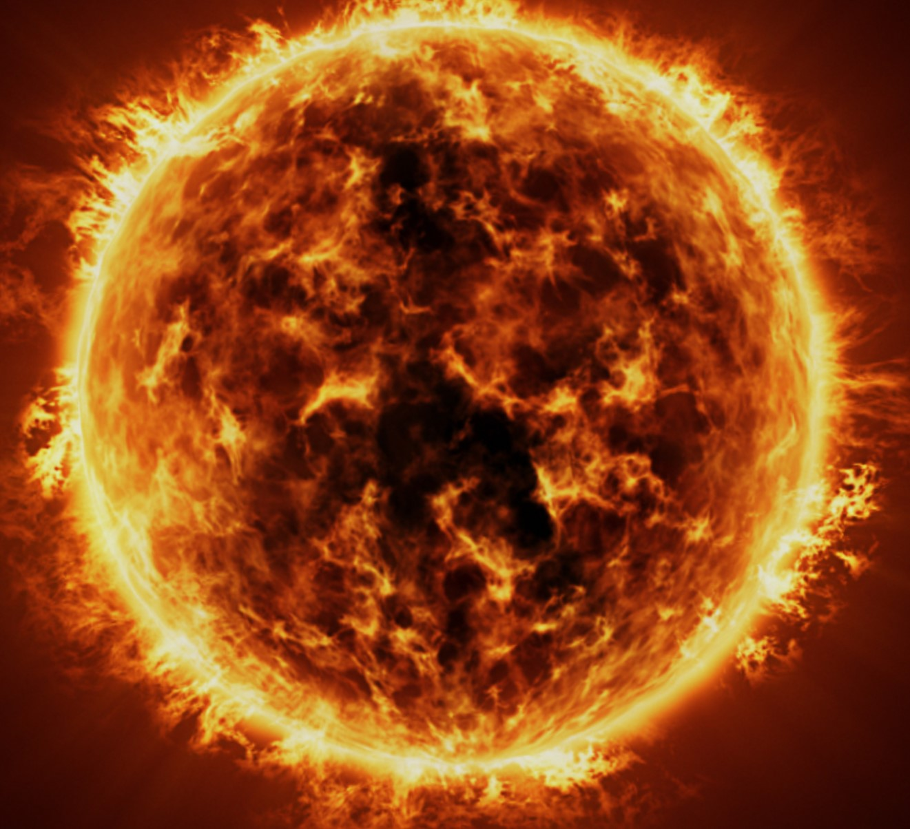

لشمس (رمزها: ☉) هي النجم المرك زي للمجموعة الشمسية. وهي تقريباً كروية وتحوي بلازما حارة متشابكة مع الحقل المغناطيسي. يبلغ قطرها حوالي 1,392,684 كيلومتر، وهو ما يعادل 109 أضعاف قطر الأرض، وكتلتها 2×1030 كيلوغرام وهو ما يعادل 330,000 ضعف كتلة الأرض وهو ما يشكل نسبة 99.86 % من كتلة المجموعة الشمسية.
